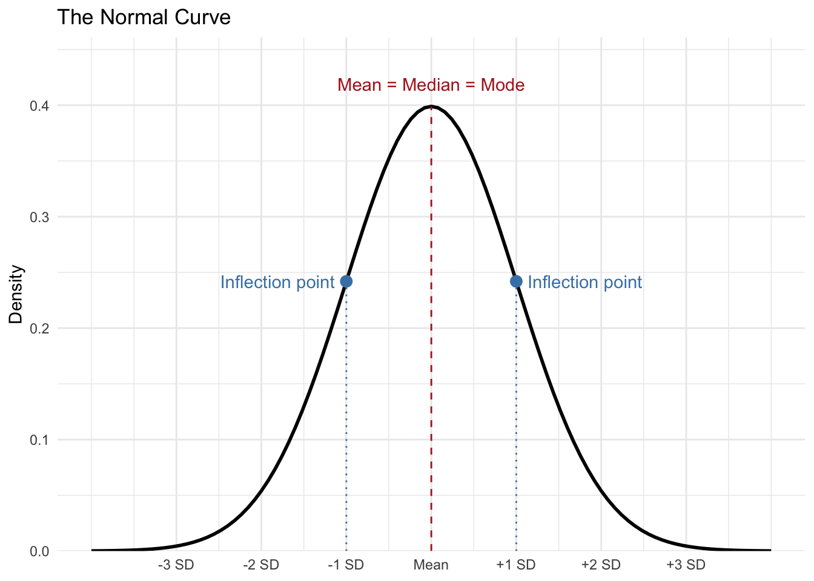
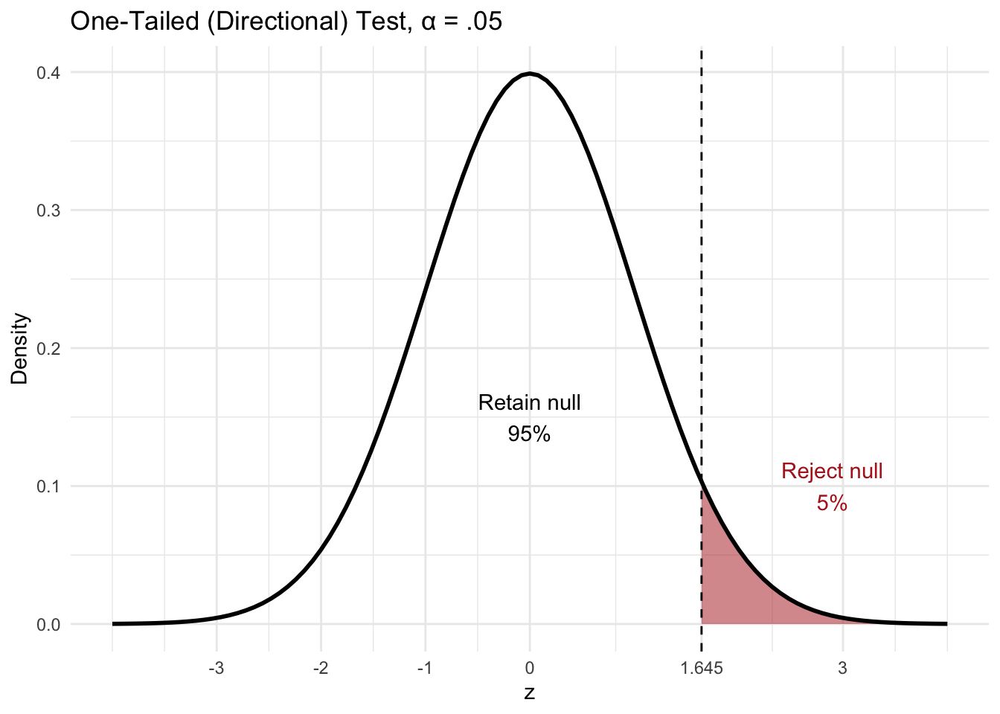
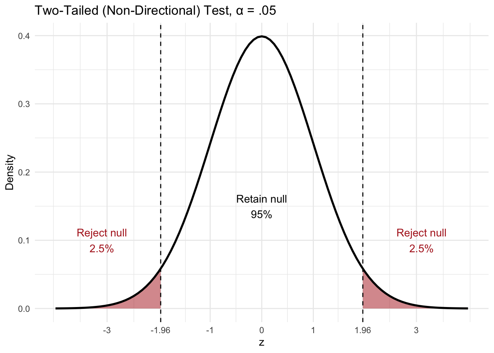

The Normal Deviate z Test
Properties of the Normal Curve
- The distribution of scores is symmetrical about the mean, which indicates that if you were to fold the distribution in half both sides or tails of the distribution would match.
- The mean, median and mode are all equal
- The distribution will have two inflection points indicating one standard deviation above and below the mean.
Remember that in a normal curve most of the data is close to the mean or scores with the highest frequency are closest to the mean. As you move to the tails of the normal distribution there is a lower frequency of scores, less of the data set is contained in the tails of the distribution. Another way to think of this is that more extreme scores or less probable scores are contained in the tails of the distribution.
Z Scores
One of the ways we are able to understand the probability or distribution of scores in a normal curve is through the use of z scores. A z score is a score that designates how many standard deviations a particular score is above or below the mean.
Here is the formula
\[ z = \frac{x - \bar x}{s} \]
z scores can be positive or negative depending on whether the score in question is above or below the mean. Thus, the higher the magnitude of the score (meaning independent of whether it’s positive or negative) the further the score is away from the mean.
Example Problem to use for a z test
Suppose you work for a gasoline company and you’ve developed a new additive that you believe increases gas mileage. Your supervisor would like to add it to their gasoline, but feels that it’s important to run a test first to see if the additive really increases gas mileage. So you collect a sample of 75 cars that are all using the gasoline additive. You discover that the mean gas mileage for your sample is 26.5 miles per gallon.
\[ \bar x = 26.5 \]
Looking back at some old records you find that over the years your company’s gasoline mileage has averaged about 24.7 miles per gallon with a standard deviation of 4.8. On the face of it, it looks like your additive has increased the gasoline mileage, but is the difference statistically significant?
Hypotheses
In experimental methodology, the null hypothesis is directly tested and if it can be shown to be unsupported (based on the statistical analysis), it then supports its counterpart, the alternative hypothesis.
Here are the two hypotheses for the gasoline additive example
Null hypothesis - “The gasoline additive will not increase the mileage of the gasoline”
Alternative Hypothesis - “The gasoline additive will increase the mileage of the gasoline”
This is an example of a directional hypothesis because it’s specifying the direction of the expected effect of the independent variable.
Directional tests are one-tailed (evaluate only one tail of the distribution) because they are investigating a specific direction of effect for the IV (e.g. increasing) while nondirectional tests are two-tailed (evaluate both tails of the distribution) because they are not specifying the direction of effect for IV.
One-tailed Directional Test

Two-tailed Non-Directional Test

Basic scientific methodology requires an experimental and a control group. The experimental group receives the IV while the control group does not. If a difference between the groups can be detected then that difference may be attributable to the IV.
Another way to state this is that the null hypothesis assumes that there is no difference between the control and experimental groups, while the alternative hypothesis assumes that there will be a difference between the groups.
Null hypothesis - experimental group = control group
Alternative Hypothesis - experimental group \(\neq\) control group
For a directional hypothesis, the alternative instead states which way the difference goes (experimental group > control group, or experimental group < control group).
For the z test, the collected sample is the experimental group, while the population stands in for the control group. For the gasoline additive example, the sample of cars tested with the additive added to the gasoline is the experimental group because the IV (gasoline additive) was added to that group, while the population is the control group because it consists of older records of the average gas mileage without the additive.
The Sampling Distribution of the Mean
For the z test, the sample mean \(\bar x\) is compared to the population mean \(\mu\) to see if there is a difference between the two values that could be attributable to the IV. Hypotheses are statements about populations, not samples, so they are written in terms of \(\mu_{additive}\), the mean gas mileage of the population of all cars using the additive, compared to the known population mean without the additive (24.7). Because our hypothesis is directional, the null hypothesis states that the additive does not increase mileage, while the alternative hypothesis states that it does.
Null hypothesis - \(\mu_{additive} \leq 24.7\)
Alternative hypothesis - \(\mu_{additive} > 24.7\)
In our example we already know that the two means are different, the sample mean is 26.5, while the population mean is 24.7. The problem is that we don’t know if the difference is statistically significant or just the result of sampling error.
Any time you take several samples from a population there will be a certain amount of sampling error or differences in the values of the mean for each recorded sample.
Probability is used to ascertain the likelihood that our results are due to the work of the IV. If it can be shown that the sample we’ve collected (in this case the sample with the additive added to the gasoline) could reasonably be assumed to have come from the comparison population (old records of gasoline without the additive), then we fail to reject the Null.
If, however, we can demonstrate that it is unreasonable to assume that our collected sample with the independent variable (gasoline additive) did come from the comparison population (gasoline without the additive) then we can instead reject the null and lend support to the alternative hypothesis.
In order to accomplish this we use the sampling distribution of the mean (SDM), which essentially provides a distribution of potential sample means drawn from a population. Imagine that you had a large population and you began selecting samples from it and each sample had an n = 75. For each sample you calculated the mean and that collection of sample means (in theory, every possible sample of n = 75) became its own distribution or collection of scores. This new distribution of scores is the SDM. It’s a distribution of sample means drawn from a particular population.
We know certain properties of the SDM based on the central limit theorem.
1. \(\mu = \mu_{\bar x}\)
2. \(\sigma_{\bar x} = \frac{\sigma}{\sqrt{n}}\)
3. The SDM will be more narrow than the population
4. For a sufficiently large n, the sampling distribution will approximate a normal distribution
First, the mean of the SDM \(\mu_{\bar x}\) will be equal to the mean of the population \(\mu\). Second, the standard deviation of the SDM \(\sigma_{\bar x}\) will be equal to the population standard deviation \(\sigma\) divided by the square root of n (the number of scores collected in each sample). This leads to the third property. Since the SDM is constructed of sample means a certain amount of variation has been removed causing the shape of the curve to be more narrow than the population. Finally, as long as n is large enough, the SDM will be approximately normal even if the population is not. This is what allows us to use z scores and the normal curve (pnorm() in R) to find probabilities for sample means.
The SDM functions as a probability curve or distribution of potential sample means drawn from a population. Based on what we know about normal curves, most of the potential sample means would be between the mean and one standard deviation (34.13% on either side of the mean) above or below the mean. Then a smaller percentage between 1 and 2 standard deviations and even smaller between 2 and 3. Thus the samples with the lowest probability of coming from the population would be on the tails of the distribution.
The conventional standard for statistical significance is called alpha.
\[ \alpha = .05 \]
Thus, in order for statistical results to be considered significant it must be demonstrated that there is only a 5% chance or less of getting a sample mean this extreme if the sample came from the null population.
In order to analyze the probability associated with a particular sample mean, z scores are used to locate the sample mean on the SDM and calculate the probability of getting a sample mean this extreme if it came from the comparison population.
Computing the z test using R
Gasoline mileage example
First find the value of z
z formula
\[ z \;test = \frac{\bar x - \mu}{\frac{\sigma}{\sqrt{n}}} \]
The formula written out is: (mean of the sample - mean of the population)/standard error of the mean). The standard error of the mean is the standard deviation of the population divided by the square root of the number in the sample.
In R you can run the formula like this:
z_score_gasoline <- (26.5-24.7)/(4.8/sqrt(75))
z_score_gasoline[1] 3.247595Define region for rejection of the Null Hypothesis
This value is known as alpha, alpha = .05 or 5%
What is the probability associated with the z score?
We use “pnorm” command to find the probability associated with a particular z score. In this case, we are analyzing the probability of getting a sample mean this extreme if the sample came from that population. To accomplish this we analyze the tail of the distribution, so we want the probability from the z score and higher, which will be our p value, so we subtract the probability associated with the z score from 1.
1-pnorm(z_score_gasoline)[1] 0.0005819235Notice that we use the z score itself, not its absolute value. In a directional test the sign matters: a negative z score would mean the additive lowered mileage, which would not support our alternative hypothesis.
Finally we compare the p value to alpha. If the p value is less than alpha (.05), then we can reject the Null hypothesis.
.0006 < .05
Since our p value is less than .05 we reject the null, which provides evidence for the alternative hypothesis, although it does not prove the alternative.
What if we have a nondirectional test?
To account for both tails of the distribution, take the absolute value of z (since a difference in either direction counts) and multiply by 2
(1-pnorm(abs(z_score_gasoline)))*2[1] 0.001163847A second way to investigate whether a sample came from a particular population is to use a confidence interval (CI). Confidence intervals describe the range of possible population means from which a sample could be drawn. The confidence interval used most often is the 95% confidence interval, which, in this case, would state that 95% of intervals built this way would contain the true population μ. Here is the formula for the 95% CI for a z test.
lower boundary of CI - \(\bar x - 1.96\) x \(\sigma_{\bar x}\)
upper boundary of CI - \(\bar x + 1.96\) x \(\sigma_{\bar x}\)
So here is how the calculation is performed in R Studio
Lower <- 26.5 - 1.96*(4.8/sqrt(75))
Lower[1] 25.41366Upper <- 26.5 + 1.96*(4.8/sqrt(75))
Upper[1] 27.58634We write confidence intervals like this: 26.5, 95% CI [25.41, 27.59].
Notice that the original population mean used for comparison to the sample was 24.7, which is outside the range provided for the 95% CI, further confirming our conclusion to reject the null.
One note: a 95% CI corresponds to a two-tailed test at \(\alpha = .05\). The interval that exactly matches our one-tailed test is the 90% CI, which uses 1.645 instead of 1.96: 26.5, 90% CI [25.59, 27.41]. The population mean of 24.7 is outside both intervals, so the conclusion is the same.
In addition to the findings from the z test, it’s always important to include an effect size as well. Effect sizes help us to analyze whether the results are meaningful or not and allows us to compare across different types of statistical tests.
For mean differences use Cohen’s d
\[ Cohen's\;d = \frac{\bar x - \mu}{\sigma} \]
So the formula is: (mean of the sample - mean of the population)/standard deviation of the population
In R Studio
Cohens_d <- (26.5-24.7)/4.8
Cohens_d[1] 0.375The full conclusion should be stated as:
The sample mean M = 26.5, 95% CI [25.41, 27.59], was significantly higher [mean difference = 1.8] than the population mean \(\mu\) = 24.7, z = 3.25, p = .0006, d = .38. Reject the null; the results support the conclusion that the gasoline additive increases gas mileage, with a small-to-medium effect size.